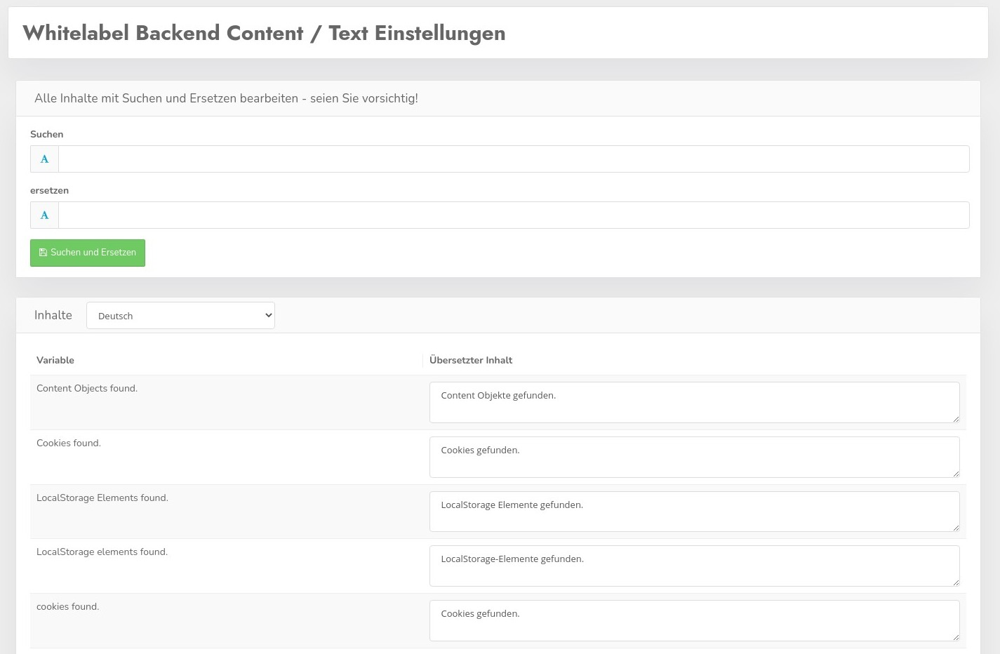

Alle Texte und Ausgaben können in der Whitelabel Version an Ihre Vorgaben angepasst werden. Klicken Sie dafür auf denMenüpunkt Content / Texte.
Hier sehen Sie die Auflistung aller Spracheinträge in der Administration, diese können Sie entweder einzeln anpassen oder "on block" mit der Suchen und Ersetzen Funktion. Falls Sie sich einmal dabei total verhauen, im Verzeichnis /messages werden Sicherung von der jeweiligen Vorversion gespeichert. Zur Not können Sie also wieder zurückspringen indem Sie die Dateien umkopieren.

Auf diese Weise können Sie z.B. auch den Namen "CCM19" gegen Ihre Bezeichnun ersetzen. Ebenfalls den Namen unseres Unternehmens im Fuß der Administration - das kann alles angepasst werden.